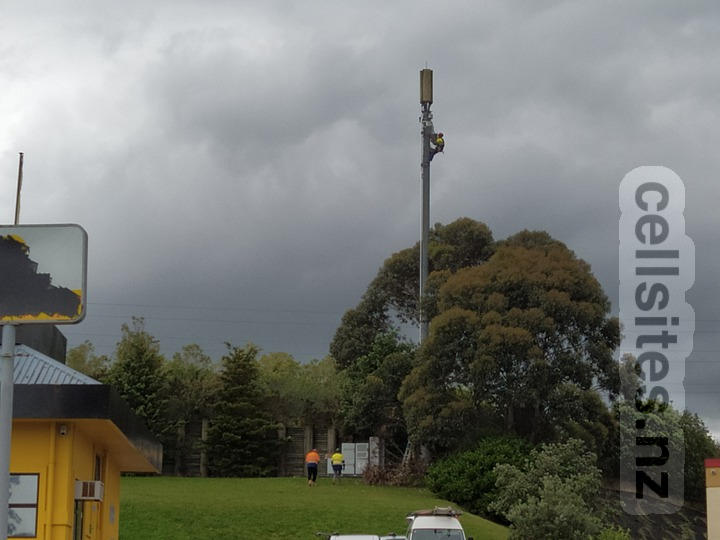
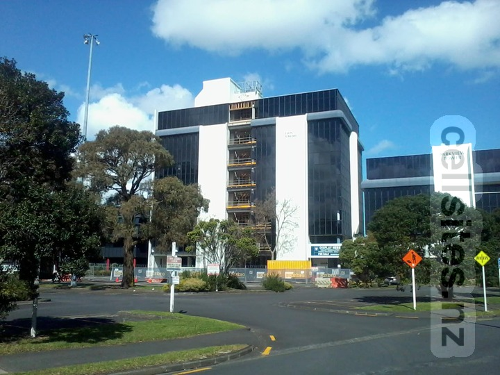
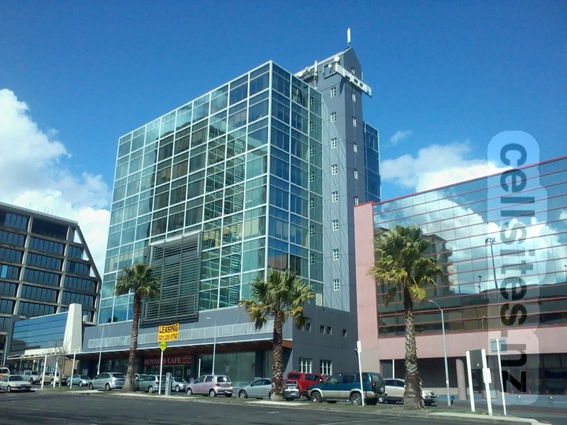
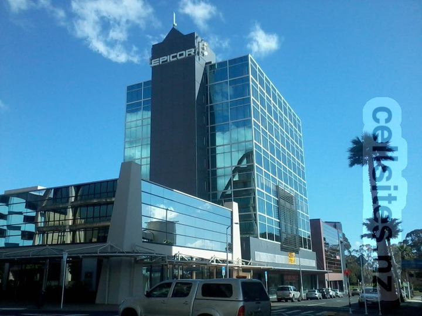
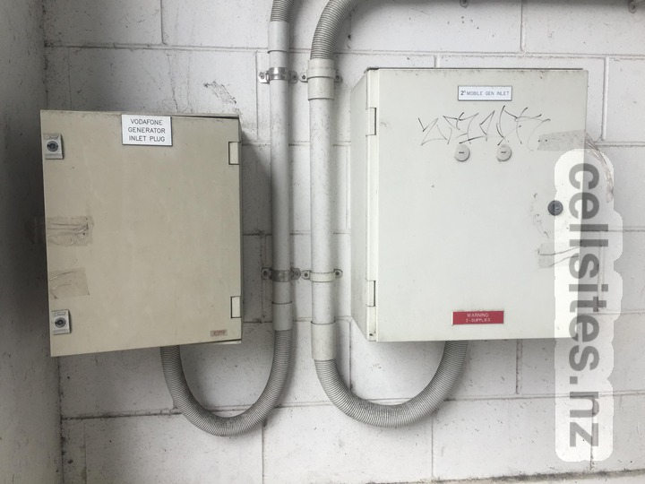

2degrees site on right. 15 April 2012.2degrees site on right. 19 October 2020.

19 October 2020
Vodafone Manukau Twin Towers

This was a major microwave hub site for Vodafone until the building was redeveloped into apartments. This photo was taken after the microwave antennas had been removed from the site. However the supporting metalwork can still be seen at the top-centre.

Vodafone antennas at very top. 2degrees antennas on side of building. 22 September 2013

Vodafone antennas at very top. 2degrees antennas on side of building. 22 September 2013

Selected sites have generator inlet plugs. 27 December 2016.